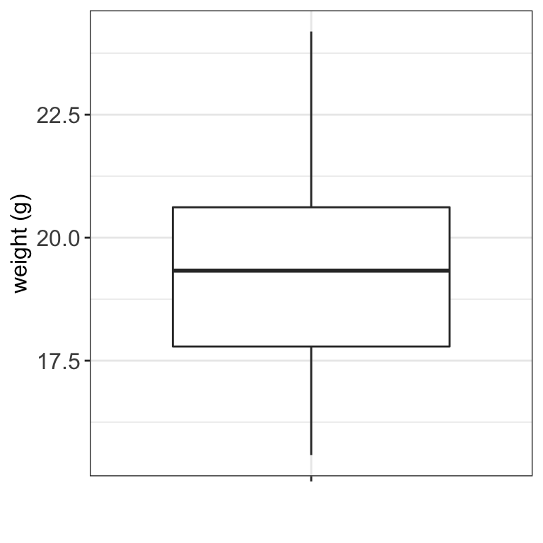

Code
# load libraries
library(tidyverse)
library(magrittr)
library(kableExtra)
library(ggplot2)
library(gridExtra)# load libraries
library(tidyverse)
library(magrittr)
library(kableExtra)
library(ggplot2)
library(gridExtra)Quartiles are the three values that divide the data values into four equally sized groups.
Example 5.1 (Lab mice (cont.))
Going back to the lab mice example. What are the three quartiles of mice weight at week 5?
# read in mice data
data.mice <- read_csv("data/mice.csv")
data.mice <- data.mice %>%
mutate(weight = round(weight,2))
# narrow data set to week 5 measurements
data.mice.week5 <- data.mice %>%
filter(week == 5)
# calculate quartiles
data.mice.week5 %>%
summarise(x = quantile(weight, c(0.25, 0.5, 0.75))) %>%
print()# A tibble: 3 × 1
x
<dbl>
1 17.8
2 19.3
3 20.6We can check if the values agree with the box plot.
# define generic ggplot theme
font.size <- 12
my.ggtheme <- theme(axis.title = element_text(size = font.size),
axis.text = element_text(size = font.size),
legend.text = element_text(size = font.size),
legend.title = element_blank(),
legend.position = "top")
data.mice.week5 %>%
ggplot(aes(x = "", y = weight)) +
geom_boxplot() +
xlab("") +
ylab("weight (g)") +
theme_bw() +
my.ggtheme
The variance of a set of observations is their mean squared distance from the mean value:
\[\sigma^2 = \frac{1}{n} \sum_{i=1}^n (x_i - \bar x)^2. \tag{5.1}\] The variance is measured in the square of the unit in which \(x\) was measured. Another common measure using the same unit as \(x\) is standard deviation, defined as the square root of the variance:
\[\sigma = \sqrt{\frac{1}{n} \sum_{i=1}^n (x_i - \bar x)^2} \tag{5.2}\]
Typically, we regard the collection of observations \(x_1, \dots, x_n\) as a sample drawn from a large population of possible observations. It has been shown theoretically that we obtain a better sample estimate of the population standard deviation if we divide by \((n-1)\). So the denominator \(n\) is commonly replaced by \(n-1\) and the sample standard deviation is calculated instead:
\[s = \sqrt{\frac{1}{n-1} \sum_{i=1}^n (x_i - \bar x)^2}. \tag{5.3}\]
To reiterate:
Example 5.2 (Lab mice (cont.))
Let’s calculate variance, standard deviation and sample standard deviation for mice weight at week 5.
# get weights measurements at week 5
weight.week5 <- data.mice.week5 %>%
pull(weight)
# number of observations
n <- length(weight.week5)
# calculate mean (arithmetic)
weight.mean <- mean(weight.week5)
# calculate variance following variance equation
sigma2 <- (sum((weight.week5 - weight.mean)^2))/(n)
# calculate standard deviation following standard deviation equation
sigma <- sqrt((sum((weight.week5 - weight.mean)^2))/(n))
# calculate sample standard deviation following sample standard deviation equation
s <- sqrt((sum((weight.week5 - weight.mean)^2))/(n-1))
# sd(weight.week5) # we can alternatively use sd() function
# collect results
v.name <- c("sigma2", "sigma", "s")
v.values <- c(sigma2, sigma, s)
results <- data.frame(stats = v.name, value = v.values)
print(results) stats value
1 sigma2 3.817581
2 sigma 1.953863
3 s 1.963706